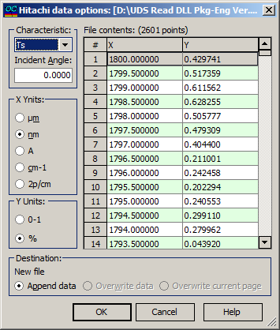

Hitachi options
The Hitachi Spectrometer UH4150/U-4100 wavelength scan data can be accessed using this option. Within the Hitachi data options dialog box, you can:
Specify the type of the measured characteristic.
Set the angle of incidence.
Choose the units for the X and Y columns.
For your convenience, the data extracted from the current file is displayed on the right side of the dialog box, making it easier to review and adjust the settings as needed.

The File contents box allows you to scroll through the content of the selected Hitachi data file. Here’s a breakdown of the key features:
Column X: Displays the wavelength grid. Users should select an appropriate wavelength unit in the X-Units field.
Column Y: Represents one of the six possible spectral characteristics:
Ts, Tp, Ta, Rs, Rp, Ra, BRs, BRp, BRa.
A proper characteristic should be chosen in the Characteristic field.
Additionally, you must specify the range (0-1 or 0-100%) in the Y-units field.
In the Destination field, you can specify the name of the data file being edited and the destination page. Here are the options available:
It is possible to:
Append data to the existing file,
Overwrite data in the existing file,
Overwrite the current page only.
When the OK button is pressed, the content of the destination file will be overwritten with the content of the Hitachi data file.
Important Note: If the number of rows in the Hitachi data file exceeds the number of rows in the destination page, additional destination pages will be automatically added, and the extra data will be written to these new pages.